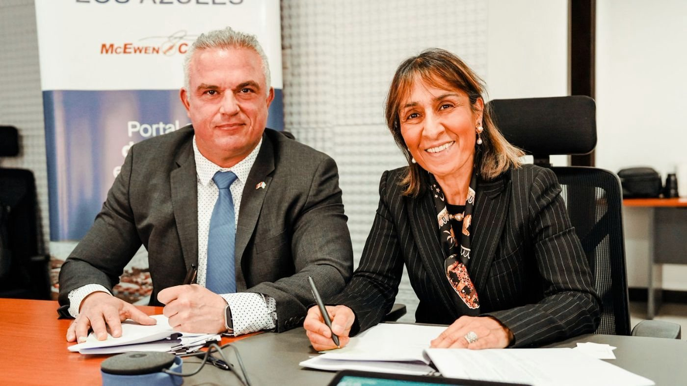

21 años en el plan, con margen para décadas más
El caso base del estudio de factibilidad contempla una vida de la mina de 21 años, sustentada en las reservas probadas y probables. El yacimiento tiene más para ofrecer. La tecnología de lixiviación Nuton de Rio Tinto podría permitir procesar los sulfuros primarios con la misma infraestructura, y un concentrador convencional elevaría la recuperación de cobre y permitiría obtener además oro y plata. McEwen Copper señaló que cualquiera de las dos vías podría extender la vida de la mina 30 años o más y hacer de Los Azules una mina para más de una generación.[1]
El escenario de crecimiento está fuera del estudio de factibilidad y se apoya en parte en recursos inferidos, que son geológicamente demasiado especulativos como para aplicarles consideraciones económicas. Un concentrador sumaría almacenamiento de relaves y consumo de agua, y cualquiera de las dos vías requiere nuevos estudios, permisos y financiamiento. Información técnica y personas calificadas ↓
Datos del proyecto
| Ubicación | Calingasta, San Juan, Argentina; a unos 3.500 m s. n. m., aproximadamente 80 km al oeste-noroeste de Calingasta y 6 km al este de la frontera con Chile[6] |
|---|---|
| Titular | McEwen Copper Inc., a través de Andes Corporación Minera S.A.[7] |
| Conducción | Michael Meding, director general de McEwen Copper; conduce Los Azules desde febrero de 2022[2, 8] |
| Yacimiento | Pórfido de cobre andino con zona de enriquecimiento supergénico[1] |
| Proceso | Mina a cielo abierto, lixiviación en pilas y SX-EW; cátodo de cobre grado A de la LME, de 99,99%, que se prevé producir en la propia mina[1] |
| Producción | 204.800 t por año en los años 1 a 5; 148.200 t por año en una vida útil de 21 años[1] |
| Costos | C1 US$1,71/lb; AISC US$2,11/lb[1] |
| Agua | 74% menos que una planta concentradora convencional; 158 L/s de promedio en la vida de la mina[1] |
| Carbono | 1.082 kg CO2-e por tonelada de cobre (alcances 1 y 2) frente a un promedio estimado de la industria de 4.026 (Skarn Associates); meta de neutralidad de carbono para 2038[1] |
| Energía | Se prevé 100% renovable, a través de una línea de alta tensión que YPF Luz construirá a su cargo[1, 3] |
| Relaves | Sin dique de colas[1] |
| Declaración de Impacto Ambiental | Otorgada en diciembre de 2024 para construcción y operación[9, 10] |
| RIGI | Resolución 1553/2025: plan de US$2.672 millones; primer proyecto de cobre aprobado; 61,1% del gasto en proveedores, bienes y obras comprometido con proveedores locales[4, 11] |
| Posición | Décimo mayor pórfido de cobre sin desarrollar del mundo por recursos minerales totales; con datos de S&P Global de 2024, su producción lo ubicaría en el puesto 26 entre 423 minas de cobre en operación[1] |
| Potencial | Procesar los sulfuros primarios con lixiviación Nuton o con un concentrador convencional podría extender la vida de la mina 30 años o más. Este escenario de crecimiento está fuera del estudio de factibilidad y se apoya en parte en recursos inferidos[1] |
| Próximos pasos | Decisión final de inversión y financiamiento completo del proyecto previstos para mediados de 2027; objetivo de producción comercial de cátodo en 2030[5] |
Reservas y recursos minerales
Estimaciones del estudio de factibilidad de octubre de 2025, con fecha efectiva 3 de septiembre de 2025.[1, 12]
Cobre en reservas y recursos
- Reservas probadas y probables10.200 M lb
Recursos, excluidas las reservas
- Recursos medidos e indicados5.400 M lb
- Recursos inferidos20.000 M lb
Cada categoría se presenta por separado y las cifras no se suman entre sí. Los recursos que no son reservas no han demostrado viabilidad económica.
Reservas minerales (probadas y probables)
| Categoría | Toneladas (Mt) | Ley de cobre (% Cu) | Cobre contenido (M lb) |
|---|---|---|---|
| Probadas | 229,9 | 0,683 | 3.463 |
| Probables | 793,2 | 0,386 | 6.754 |
| Total probadas y probables | 1.023,1 | 0,453 | 10.217 |
Precio del cobre utilizado para las reservas: US$4,25/lb. Valor de corte variable de US$4,79 a US$7,23 por tonelada, en términos de NSR. Las reservas se informan sobre una base del 100%.
Recursos minerales, excluidas las reservas
| Categoría | Toneladas (Mt) | Ley de cobre (% Cu) | Cobre contenido (miles de millones de lb) |
|---|---|---|---|
| Medidos e indicados | 965,5 | 0,255 | 5,4 |
| Inferidos | 4.239,3 | 0,214 | 20,0 |
Precio del cobre utilizado para los recursos: US$4,80/lb (oro: US$2.500/oz; plata: US$32/oz). Los recursos se informan excluidas las reservas minerales y no se suman a ellas. La mayor parte de estos recursos, incluida la totalidad de los recursos inferidos, se informa para su procesamiento mediante molienda o lixiviación avanzada, como Nuton, procesos que el caso base del estudio de factibilidad no incluye.
Indicadores económicos del estudio de factibilidad
| Capital inicial | US$3.168 millones |
|---|---|
| VAN después de impuestos (8%) | US$2.940 millones |
| TIR después de impuestos | 19,8% |
| Período de repago | 3,9 años |
| Vida de la mina | 21 años |
| Precio del cobre, caso base | US$4,35/lb |
| Capital de sostenimiento, vida de la mina | US$2.131 millones |
Caso base del estudio de factibilidad anunciado el 7 de octubre de 2025.[1]
Financiamiento
Préstamo a plazo de US$240 millones, agosto de 2026
El 27 de agosto de 2026 McEwen Copper cerró un préstamo senior garantizado a plazo de US$240 millones para financiar la ingeniería y las obras tempranas de Los Azules, y para fines corporativos generales.[5, 13]
| Monto | US$240 millones, senior garantizado |
|---|---|
| Plazo | 4 años |
| Interés | 12,0% anual, pagadero mensualmente |
| Warrants | 15.000 warrants a cinco años para la compra de acciones ordinarias de McEwen Copper por cada US$1 millón de capital, con un precio de ejercicio de US$40 por acción |
| Destino de los fondos | Ingeniería y obras tempranas en Los Azules; fines corporativos generales |
| Prestamista | Monto |
|---|---|
| Sprott Natural Resource Investment Partners | US$112 millones |
| Rob McEwen | US$85 millones |
| Otros prestamistas | US$43 millones |
This financing reflects our lenders' confidence in Los Azules and in the progress Argentina has made over the past two and a half years. The initiatives of President Javier Milei have helped make Argentina an increasingly attractive destination for large-scale foreign investment. Economic stabilization, stronger credit ratings, lower country risk and the RIGI are bringing long-term capital back to the country. San Juan continues to demonstrate the qualities of a dependable mining jurisdiction, supported by strong institutions, rigorous processes and sound governance. We are proud to be building Los Azules here.Este financiamiento refleja la confianza de nuestros prestamistas en Los Azules y en los avances que la Argentina logró en los últimos dos años y medio. Las iniciativas del presidente Javier Milei contribuyeron a convertir a la Argentina en un destino cada vez más atractivo para la inversión extranjera de gran escala. La estabilización económica, las mejores calificaciones crediticias, el menor riesgo país y el RIGI están haciendo que el capital de largo plazo vuelva al país. San Juan sigue demostrando las cualidades de una jurisdicción minera confiable, respaldada por instituciones sólidas, procesos rigurosos y una buena gobernanza. Estamos orgullosos de construir Los Azules aquí. (Traducción de la declaración original en inglés)
Historial de financiamiento
| 2021 | Se crea McEwen Copper para desarrollar Los Azules, con una colocación privada Serie B de US$80 millones[14] |
|---|---|
| Desde 2021 | US$453 millones captados en total en colocaciones privadas, incluida la Serie B de 2021, con Stellantis y Nuton, de Rio Tinto, como inversores estratégicos[6] |
| sep 2025 | Acuerdo de colaboración con la IFC para alinear Los Azules con los estándares ambientales, sociales y de gobernanza de la IFC con vistas a un posible financiamiento futuro de deuda y capital[15] |
| sep–oct 2025 | Admisión en el RIGI con un plan de inversión de US$2.672 millones[11] |
| may 2026 | Société Générale designado asesor financiero exclusivo para el financiamiento con deuda del proyecto[16] |
| ago 2026 | Cierre del préstamo senior garantizado a plazo de US$240 millones[5] |
| Plan | En la conferencia de resultados del segundo trimestre de 2026, Michael Meding afirmó que McEwen Copper trabaja en la estructuración de un paquete de financiamiento total de unos US$4.000 millones, que cubra la inversión de capital, el capital de trabajo, los intereses y una línea para sobrecostos.[17] |
McEwen Copper
| Compañía | McEwen Copper Inc., sociedad registrada en Alberta, creada por McEwen Mining en julio de 2021 para desarrollar Los Azules[7, 14] |
|---|---|
| Oficina central | 150 King Street West, Toronto[18] |
| Activos | Los Azules (a través de Andes Corporación Minera S.A.) y la propiedad Elder Creek, en Nevada[7] |
| Director General | Michael Meding[2] |
Accionistas
- McEwen Inc. 46,3%
- Stellantis 18,2%
- Nuton / Rio Tinto 17,2%
- Rob McEwen 13,0%
- Victor Smorgon Group 3,0%
- Otros 2,3%
Fuente: McEwen Inc.[6]

La Argentina y el cobre
- La Argentina no produce cobre a gran escala desde que cerró Bajo de la Alumbrera, en 2018.[19]
- Un informe de la Secretaría de Minería de la Nación proyecta que la producción podría superar 1,5 millones de toneladas anuales hacia 2035.[20]
- El RIGI (Ley 27.742) ofrece una garantía de estabilidad de 30 años sobre sus incentivos para inversiones de más de US$200 millones.[21]
- S&P Global proyecta una demanda de cobre de 42 millones de toneladas en 2040, un 50% más que los niveles actuales.[22]
- La AIE prevé que el cobre registre el mayor crecimiento de demanda en volumen, con unos 7 millones de toneladas más hacia 2040.[23]
Información técnica y personas calificadas
Este es el sitio web personal de Michael Meding. La información sobre Los Azules que figura aquí resume lo publicado por McEwen Inc. y McEwen Copper y no es emitida por ninguna de las dos compañías. La información oficial está disponible en mcewenmining.com, en SEDAR+ y en EDGAR.
La información científica y técnica de esta página proviene del estudio de factibilidad de Los Azules anunciado por McEwen Inc. el 7 de octubre de 2025 (fecha efectiva: 3 de septiembre de 2025) y del Technical Report Summary S-K 1300 presentado ante la Comisión de Bolsa y Valores de los Estados Unidos (SEC) como anexo al informe anual 2025 de McEwen Inc. (fecha del informe: 31 de diciembre de 2025). Las personas calificadas que se mencionan a continuación revisaron y verificaron el anuncio de octubre de 2025 conforme al NI 43-101. Esta página no agrega información científica ni técnica a la contenida en esos documentos.[1, 12]
El estudio de factibilidad y la información asociada divulgada en el anuncio de McEwen Inc. del 7 de octubre de 2025 fueron revisados y verificados conforme al NI 43-101 por las siguientes personas calificadas: James L. Sorensen, FAusIMM, Samuel Engineering (ejecución del proyecto, desarrollo y otra información, excepto la información sobre recursos minerales); W. David Tyler, SME Registered Member, director de proyecto de McEwen Copper, que no es independiente del emisor (información de McEwen y otra información, excepto la información sobre recursos minerales); Michael McGlynn, SME Registered Member, Samuel Engineering (metalurgia y procesos); Jeff Sullivan, FAusIMM, CRM-SA, LLC (estimación de recursos minerales); Gordon Zurowski, P.Eng., AGP Mining Consultants (minería y estimación de reservas minerales); y Steve Pozder, P.E., Samuel Engineering (modelización financiera).[1]
Los recursos minerales que no son reservas minerales no tienen viabilidad económica demostrada. La estimación de los recursos minerales puede verse afectada de manera significativa por factores ambientales, de permisos, legales, de titularidad, sociopolíticos, de comercialización u otros factores relevantes. Se considera que los recursos minerales inferidos son geológicamente demasiado especulativos como para aplicarles consideraciones económicas que permitan clasificarlos como reservas minerales; no han sido objeto de exploración suficiente para clasificarse como recursos indicados o medidos, y no existe certeza de que una mayor exploración permita elevarlos de categoría.[1]
Las afirmaciones de esta página sobre hechos futuros constituyen declaraciones prospectivas. Entre ellas figuran la decisión final de inversión y el financiamiento completo del proyecto previstos para mediados de 2027, la producción comercial de cátodo fijada como objetivo para 2030, la meta de neutralidad de carbono para 2038, las posibles extensiones de la vida de la mina y el plan de financiamiento. Reflejan las expectativas actuales de McEwen Copper, no constituyen garantías y dependen del financiamiento, la ingeniería, los permisos, los precios de los metales, las condiciones en la Argentina y los demás riesgos descritos en los documentos presentados por McEwen Inc. ante la SEC y en SEDAR+. Los resultados reales podrían diferir de manera significativa. Los supuestos clave, los parámetros y los métodos de estimación se detallan en el anuncio del estudio de factibilidad y en el informe técnico.
Esta traducción se ofrece solo para comodidad del lector; ante cualquier discrepancia, prevalece la versión en inglés de la información técnica y de las advertencias.
Preguntas y respuestas
¿Qué es Los Azules?
Un proyecto de pórfido de cobre en la cordillera de Calingasta, San Juan, propiedad de McEwen Copper. Su estudio de factibilidad de octubre de 2025 prevé una operación a cielo abierto con lixiviación en pilas y SX-EW que produciría cátodo de cobre de 99,99% en la propia mina, con un promedio de 204.800 toneladas anuales en los primeros cinco años.[1]
¿Dónde está exactamente Los Azules?
En el departamento Calingasta, provincia de San Juan, a unos 3.500 metros de altura, aproximadamente 80 km al oeste-noroeste de Calingasta y 6 km al este de la frontera con Chile.[6]
¿Quién conduce Los Azules?
Michael Meding, director general de McEwen Copper, conduce el proyecto desde febrero de 2022.[2, 8]
¿Quiénes son los dueños de McEwen Copper?
McEwen Inc. 46,3%, Stellantis 18,2%, Nuton (de Rio Tinto) 17,2%, Rob McEwen 13,0%, Victor Smorgon Group 3,0% y otros accionistas 2,3%.[6]
¿Cuándo producirá cobre Los Azules?
McEwen Copper prevé la decisión final de inversión y el financiamiento completo del proyecto para mediados de 2027, y tiene como objetivo producir el primer cátodo de cobre comercial en 2030.[5]
¿Qué distingue al diseño de Los Azules?
El diseño produciría cátodo de cobre terminado en la mina en lugar de concentrado, sin dique de colas, con energía 100% renovable, un 74% menos de agua que una planta concentradora convencional y una intensidad de carbono de 1.082 kg CO2-e por tonelada frente a un promedio estimado de la industria de 4.026.[1, 3]
¿Los Azules está aprobado en el RIGI?
Sí. La Resolución 1553/2025, publicada el 14 de octubre de 2025, admitió Los Azules con un plan de inversión de US$2.672 millones. Fue el primer proyecto de cobre aprobado en el régimen.[4, 11]
¿Qué tamaño tiene Los Azules?
El estudio de factibilidad informa reservas probadas y probables de 1.023 millones de toneladas con una ley de 0,453% Cu, que contienen 10.200 millones de libras de cobre (fecha efectiva: 3 de septiembre de 2025). Excluidas esas reservas, los recursos medidos e indicados contienen 5.400 millones de libras y los recursos inferidos, 20.000 millones de libras; cada categoría se informa por separado.[1]
¿Cuánto tiempo podría operar Los Azules?
El caso base del estudio de factibilidad contempla una vida de la mina de 21 años, sustentada en las reservas probadas y probables. Más allá del estudio, McEwen Copper identificó dos vías para procesar los sulfuros primarios (la tecnología Nuton de Rio Tinto o un concentrador convencional) y señala que cualquiera de ellas podría extender la vida de la mina 30 años o más.[1]
¿Qué es el préstamo a plazo de US$240 millones?
Un préstamo senior garantizado a cuatro años, al 12,0% anual, que McEwen Copper cerró el 27 de agosto de 2026 con Sprott Natural Resource Investment Partners (US$112 millones), Rob McEwen (US$85 millones) y otros prestamistas (US$43 millones). Financia la ingeniería y las obras tempranas hacia la decisión final de inversión.[5]
¿Cómo se financia el proyecto?
McEwen Copper captó US$453 millones en colocaciones privadas desde 2021, incluidas las de Stellantis y Nuton, y cerró un préstamo a plazo de US$240 millones en agosto de 2026. Société Générale es su asesor financiero exclusivo para la deuda del proyecto, la IFC firmó un acuerdo de colaboración y la compañía trabaja en la estructuración de un paquete de financiamiento total de unos US$4.000 millones.[5, 6, 15–17]
Referencias
- 1McEwen Inc.. Los Azules Feasibility Study Confirms Economically Robust Copper Project With Leading ESG Performance. 2025-10-07. www.mcewenmining.com
- 2McEwen Inc.. Management team: Michael Meding, Managing Director, McEwen Copper. 2026. www.mcewenmining.com
- 3YPF Luz. YPF Luz y Los Azules firman acuerdo exclusivo de energía renovable. 2024-08-26. www.ypfluz.com
- 4LA NACION. El Gobierno aprobó un nuevo proyecto RIGI: una minera invertirá US$2700 millones en San Juan. 2025-09-26. www.lanacion.com.ar
- 5McEwen Inc.. McEwen Copper Completes US$240 Million Term Loan to Advance Los Azules Toward Final Investment Decision. 2026-08-27. www.mcewenmining.com
- 6McEwen Inc.. Los Azules project page. 2026. www.mcewenmining.com
- 7McEwen Inc. (SEC 10-K/A). McEwen Copper Inc. consolidated financial statements 2025. 2026-05-20. www.sec.gov
- 8GlobeNewswire. McEwen Copper Announces Management Addition. 2022-02-17. www.globenewswire.com
- 9McEwen Inc. (SEC 8-K). Los Azules receives environmental approval for construction and operation. 2024-12-03. www.sec.gov
- 10Minería & Desarrollo. El proyecto de cobre Los Azules en San Juan obtuvo luz verde para su explotación. 2024-12-03. www.mineriaydesarrollo.com
- 11Boletín Oficial de la República Argentina. Resolución 1553/2025, Ministerio de Economía: Proyecto Los Azules admitted to RIGI. 2025-10-14. www.boletinoficial.gob.ar
- 12McEwen Inc. (SEC, Exhibit 96). S-K 1300 Technical Report Summary, Feasibility Study: Los Azules Copper Mining Project, Argentina. Effective date 3 September 2025; report date 31 December 2025. 2025-12-31. www.sec.gov
- 13McEwen Inc. (SEC 8-K). McEwen Copper completes US$240 million term loan. 2026-08-27. www.sec.gov
- 14GlobeNewswire. MUX Creates McEwen Copper Which Announces $80 Million Series B Private Placement to Advance the Los Azules Copper Project. 2021-07-06. www.globenewswire.com
- 15IFC, World Bank Group. IFC supports McEwen Copper on sustainable financing for Los Azules. 2025-09-24. www.ifc.org
- 16McEwen Inc.. McEwen Copper appoints Société Générale as financial advisor for project debt financing of Los Azules. 2026-05-14. www.mcewenmining.com
- 17The Motley Fool (transcript). McEwen (MUX) Q2 2026 earnings call transcript. 2026-08-13. www.fool.com
- 18McEwen Inc. (SEC 10-K/A). McEwen Copper Inc. financial statements 2024 (head office). 2025-05-02. www.sec.gov
- 19Reuters via MINING.COM. Vicuña could double investment in Argentina copper project to $800m in 2026. 2026-02-09. www.mining.com
- 20Panorama Minero. Cobre: cartera de proyectos en Argentina podría superar 1,5 millones de toneladas de producción hacia 2035. 2026. www.panorama-minero.com
- 21Gobierno de la Argentina. RIGI: qué es. 2026. www.argentina.gob.ar
- 22S&P Global. Copper in the Age of AI: substantial shortfall in copper supply widens. 2026-01-08. press.spglobal.com
- 23International Energy Agency. Global Critical Minerals Outlook 2026, outlook. 2026-07-16. www.iea.org
- 24EconoJournal. Michael Meding, nuevo presidente de Gemera. 2024-10-07. econojournal.com.ar
- 25LinkedIn, Los Azules. Los Azules en Expo San Juan Minera 2026. 2026-05-07. www.linkedin.com
- 26Reuters via GBM. Cobre y cerveza: ejecutivo minero alemán abre fábrica en Argentina. 2026-05-12. gbm.com
- 27Minería & Desarrollo. Eligieron a Michael Meding de Los Azules como el Empresario Minero del Año. 2024-12-05. www.mineriaydesarrollo.com
- 28Diario de Cuyo. El vicepresidente de McEwen Copper, Michael Meding, fue elegido como 'Empresario Minero del Año 2025'. 2025-12-04. www.diariodecuyo.com.ar